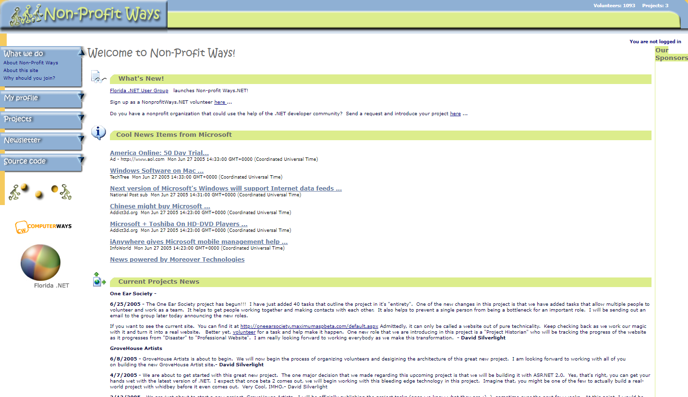

A community I built to connect the .NET developer community with the nonprofits who need them — pairing eager new developers with seasoned mentors to ship real websites for good causes, free of charge.

The whole idea: turn the time and talent of the developer community into real, lasting value for organizations doing good.
Get hands-on experience building a real, public website under the guidance of seasoned pros.
Lead a team, share what they know, and give back — turning expertise into impact.
Receive a high-quality website built by the community, at no cost to their mission.
Launched with the Florida .NET User Group and built on ASP.NET 2.0 — volunteer sign-ups, project intake, a news feed and member profiles, all powering a genuine community.